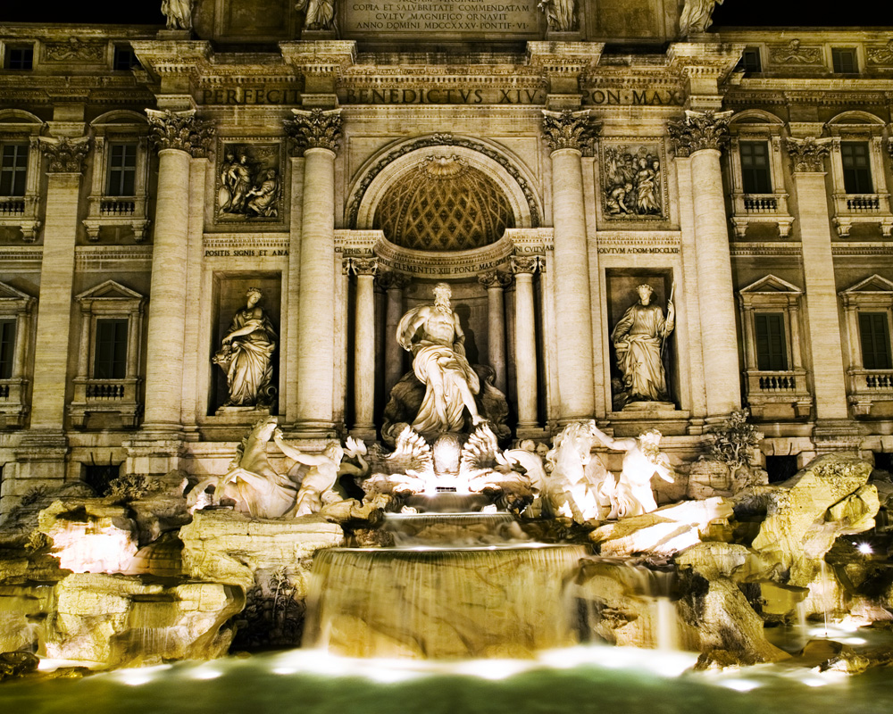

23 jours / 21 nuits

Visitez les incontournables du Vieux Continent dans ce périple de 23 jours qui vous permettra de découvrir les principaux attraits de la région.
De la Catalogne à l'Autriche en passant par la Provence, ce circuit vous donnera l'occasion d'explorer les multiples facettes du meilleur de l'Europe.
Barcelone • Montpellier • Nice • Florence • Rome • Vienne • Prague • Berlin • Amsterdam • Paris • Londres
Inclusions
- Vols internationaux au départ de Montréal, Québec ou Ottawa avec Air Canada
- Vol de Rome à Vienne avec Austrian
- Hébergement dans des hôtels 4 et 5 étoiles
- Train Thalys d'Amsterdam à Paris
- Train Eurostar de Paris à Londres
- Transport local en autocar de luxe
- Visites avec guides francophones selon l'itinéraire
- 2 repas par jour